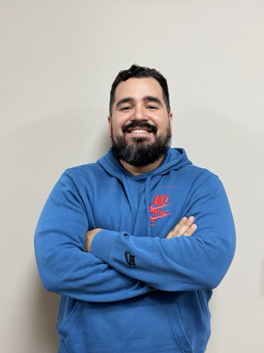

I build intelligent systems at the intersection of social science and AI — LLM pipelines, RAG-powered conversational agents, and data tools that help organizations understand and act on complex information.

I'm an economist and computer science engineer who builds AI-powered solutions for real-world problems. My background is unusual: I started in economics and complex systems research, then moved into machine learning, NLP, and — more recently — LLM orchestration and agentic AI.
That combination means I can do the technical work and understand the social, organizational, and research context behind it. I've built conversational agents, multi-step data pipelines, ML clustering systems, and interactive dashboards used by organizations across Colombia and Latin America.
Currently leading data science and AI at Estudio Plural, where I design LLM-based tools for behavioral research, knowledge retrieval, and organizational intelligence. I also teach — I've run NLP workshops at Universidad del Valle and consult on applied research projects.
From production bots to deployed dashboards — a curated set of systems I've built.
End-to-end ML pipeline for archetype discovery. LangGraph orchestrates ingestion → profiling → preprocessing → algorithm selection → clustering → LLM-generated narrative. 33 automated tests passing.
Semantic search over 6 educational documents on gender and parenting. MongoDB vector store + OpenAI embeddings. Multilingual WhatsApp bot with conversation memory in Supabase. 7 specialized agents, 1,544 processed chunks.
Multilingual bot (ES/EN/PT) for Equimundo's A+P Manual. 5 sequential LLM agents: language detection → intent classification → specialized response (factual, planning, ideation, sensitive topics). Built with FastAPI + LangGraph.
5 sequential LLM agents that evaluate documents against rubrics, producing scored Word + PDF reports. Handles PDF and DOCX inputs. Configurable rubric; defaults to a 4×25pt scoring schema.
Automated daily scanner of 15+ funding and grant sources. Claude AI filters by organizational relevance, deduplicates results, and sends curated alerts to Slack. Runs on GitHub Actions every morning.
Interactive dashboard for Colombia's General Royalties System (SGR). Real-time data from datos.gov.co via Socrata API, dynamic filters, choropleth maps, and Excel export. Deployed on Streamlit Cloud.
No-code SaaS platform for building multi-agent chatbots with multi-channel deployment (WhatsApp, Telegram, Web). Full UI in Next.js + shadcn/ui; FastAPI backend with MongoDB Atlas and Supabase auth.
Multi-city survey processing pipeline for social field research across 4 cities in Colombia, Peru, Ecuador, and Bolivia. KoboToolbox integration, validation, deduplication, LLM-generated reports, and 30+ charts for interim deliverables.
Leading design and deployment of ML, NLP, and LLM systems for social and behavioral analytics. Build RAG-based conversational assistants, ETL pipelines for unstructured data, and interactive dashboards for non-technical teams across research and product contexts.
Led research processes for public and business decision-making contexts. Deployed AI agents for information synthesis, built the SGR royalties monitoring dashboard, and developed an MVP multi-agent document assistant for project formulation.
Designed and modeled socio-environmental datasets using PCA, clustering, and spatial modeling. Developed network models and fuzzy logic systems applied to complex environmental systems.
Social media mining, sentiment analysis, and user profiling using clustering and NLP techniques. Developed social listening reports and data-driven user personas from digital interaction data.
Data mining, citation network analysis, and semantic model development in R and Python. Advanced data visualization and co-authorship of peer-reviewed publications in economic methodology.
Open to consulting, research collaborations, and new projects — especially where AI, data, and social impact intersect.